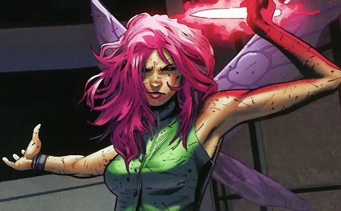

Meu primeiro post
Por: Eduarda Soares
Boas-vindas ao meu novo blog! Aqui vou compartilhar dicas de programação e curiosidades da área de tecnologia.
vou compartilhar conhecimentos sobre tecnologia e programação

Por: Eduarda Soares
Boas-vindas ao meu novo blog! Aqui vou compartilhar dicas de programação e curiosidades da área de tecnologia.